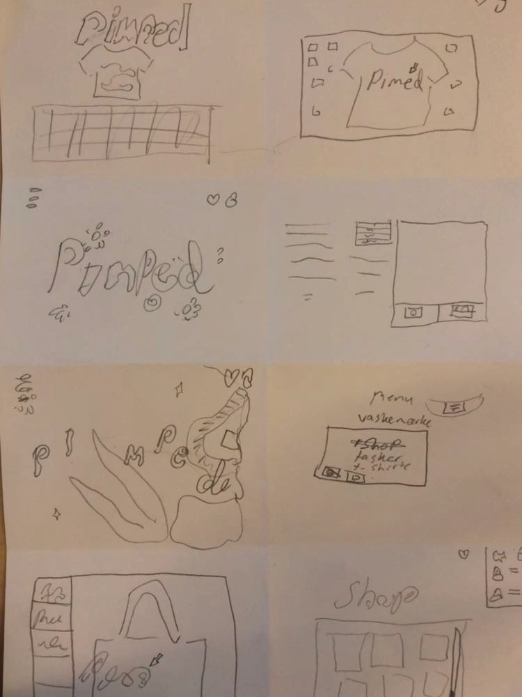
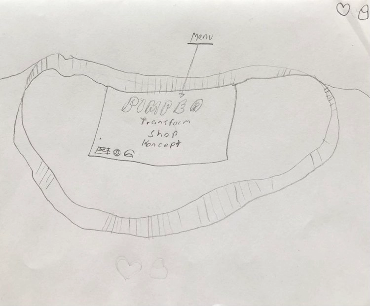
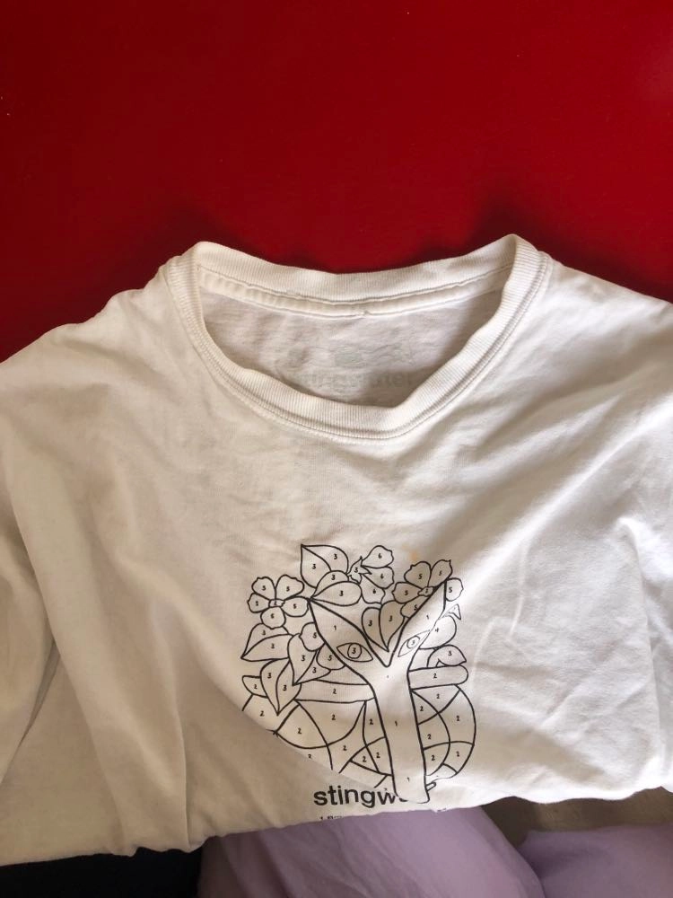
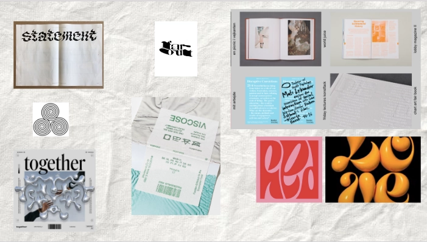
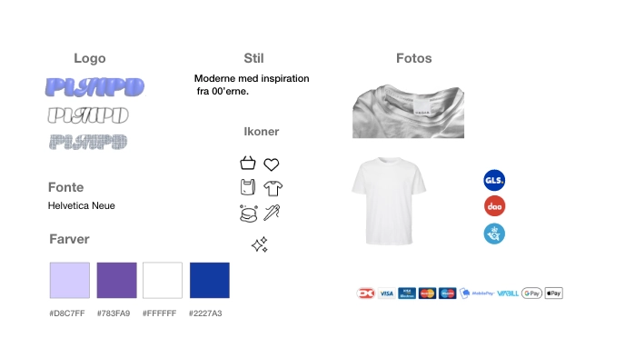
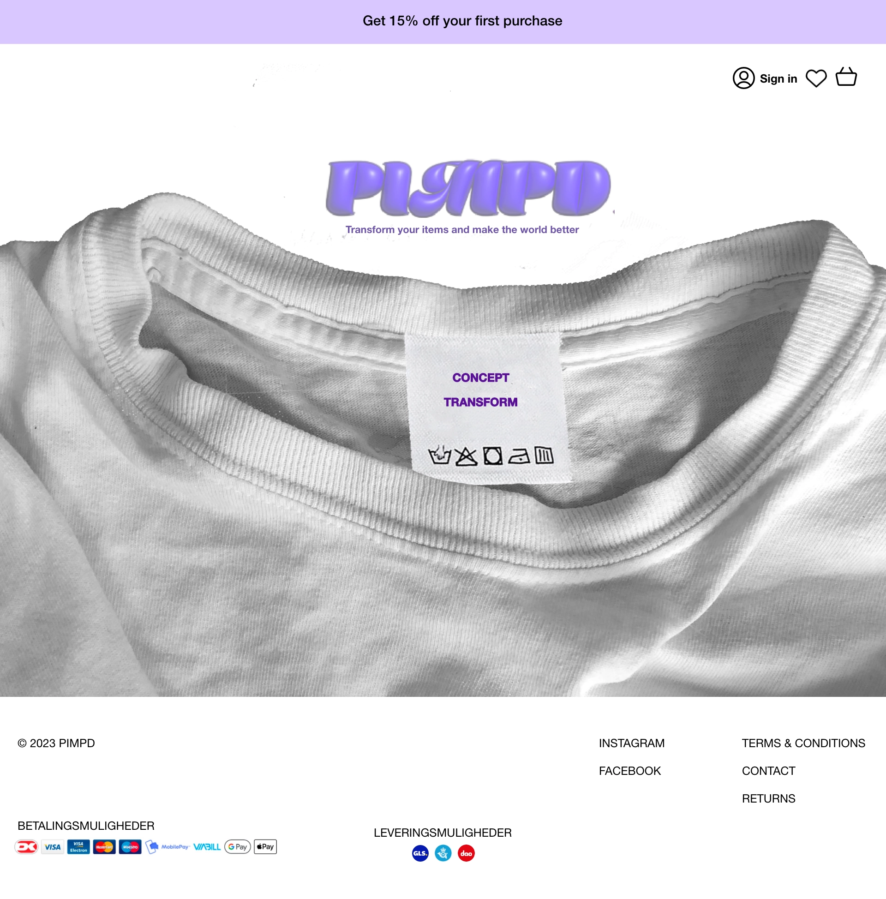
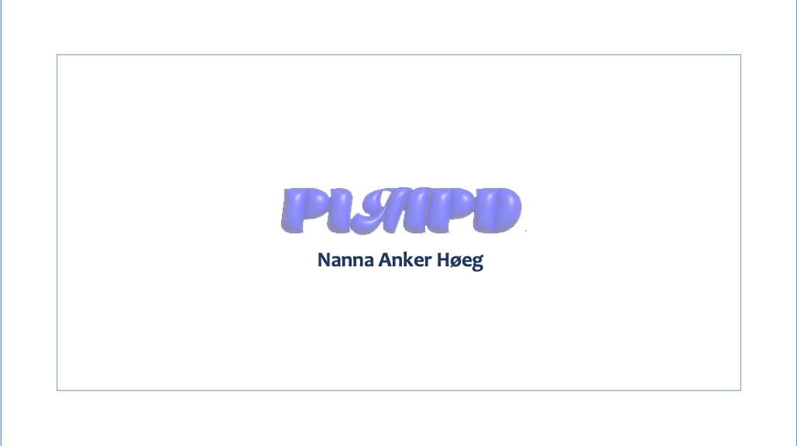
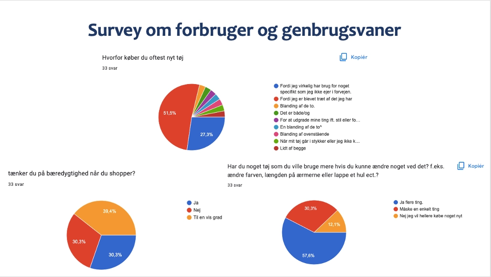
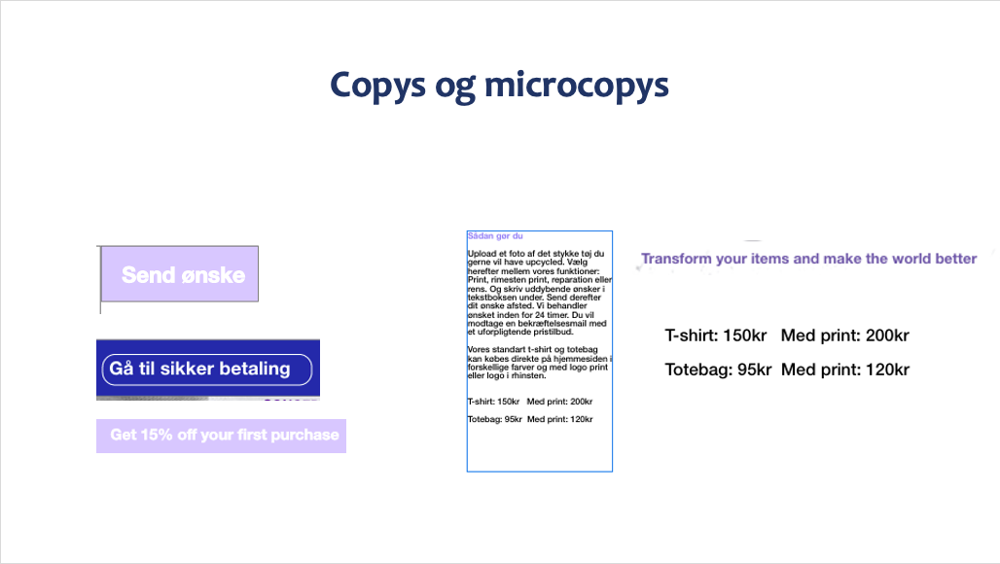
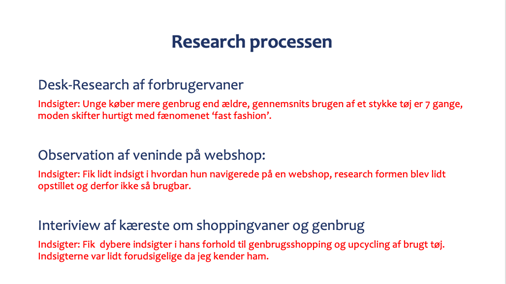

UX
WEBSHOP
I dette tema lærte vi om UX-metoder. Vi lærte at indsamle data med forskellige research metoder, herunder: desk-research, survey, observering og interview. I opgaven skulle jeg udarbejde et t-shirt koncept som skulle indgå i en webshop prototype. Hertil skulle der skabes en afsender og USP på baggrund af selvvalgt målgruppe.
Med hjælp fra UX metoderne udarbejdede jeg et t-shirt koncept, hvor brugt tøj sendes ind til virksomheden og bliver opgraderet efter kundens ønske.
Herefter lavede jeg skitser med crazy8 metoden, og derefter rwireframes, mockup og styletile i xd, hvor jeg udarbejdede et ungdommeligt udtryk, som passede til min målgruppe. Jeg havde fokus på et gennemskueligt layout med tydelige copies og mikrocopies, for at gøre siden brugervenlig.
Jeg brugte for første gang photoshop og skabte forsiden udefra et foto af min eget gamle t-shirt.
Da jeg havde prototypen klar. Lavede jeg en tænk højt test med 3 forsøgspersoner. Her fik jeg nogle indsiger i mit design og ændrede b.la. størrelsen på nogle informations-vinduer.

PROCESS
CRAZY8'S
FORSIDE SKITSE
T-SHIRT FØR PHOTOSHOP
MOODBOARD
STYLETILE
PROTOTYPE
PITCH
For at ‘sælge’ mit koncept til resten af holdet og underviserne, forberedte jeg en pitch. Jeg fortalte om min process udefra et powerpoint med billeder af testresultater, indsigter og designforløbet. Jeg præsenterede Afsender, USP og målgruppe og viste til sidst selve prototypen. Jeg ville gerne have gået mere i dybden med min process med research og hvorfor den havde ført mig til det endelige produkt. Dette var også en del af den kritik jeg fik.
PITCH →PROCESS
POWERPOINT
SURVEY
COPY / MICROCOPY
RESEARCH
